Human Nature
Our planet is changing. Climate breakdown is a big concern of mine. That there is not a greater sense of urgency about it, around the world, also concerns me. My drawings explore the symbiotic relationship between nature and man made.
Each drawing is a reflection on our impact on the world. Up close you recognise familiar patterns of roads and buildings. From a distance the drawings look like organic patterns, lichen, animal hide or cells.
Works are shown at their relative scale. Select a drawing to view it up close.
-
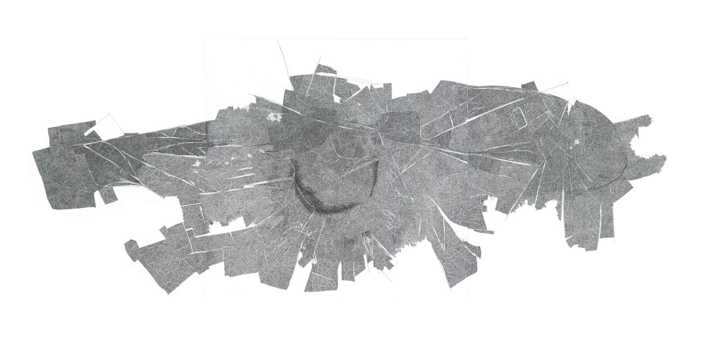
Anthropocene 2020 · 1260 × 594 mm -
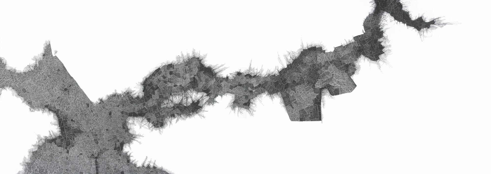
Routes to market 2019–2020 · 840 × 297 mm -
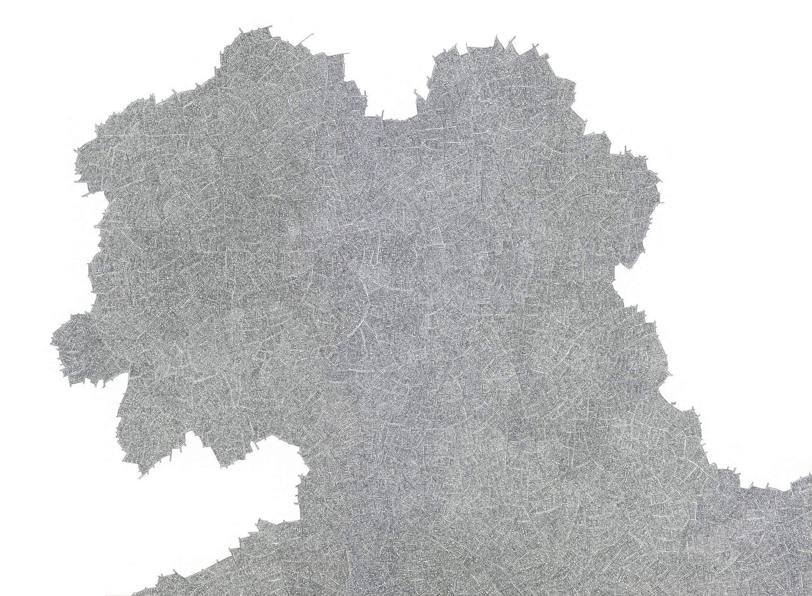
Eremocine 2019 · 594 × 420 mm -
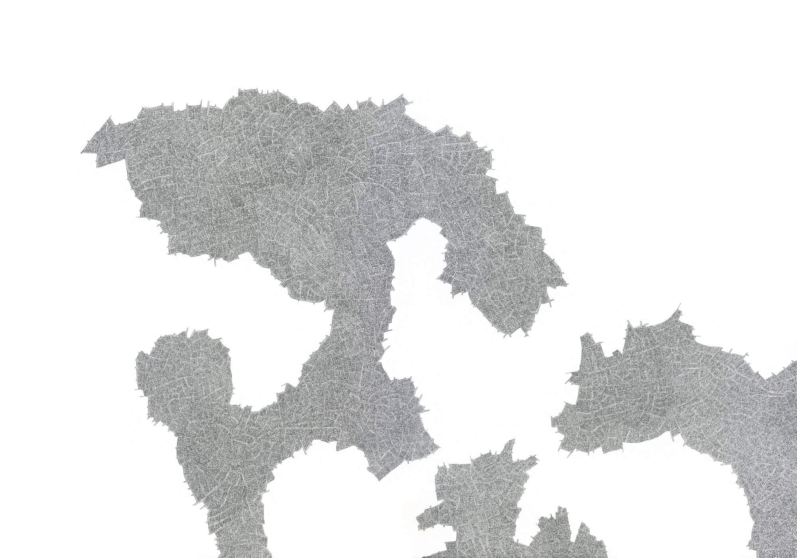
Action & reaction 2019 · 594 × 420 mm -
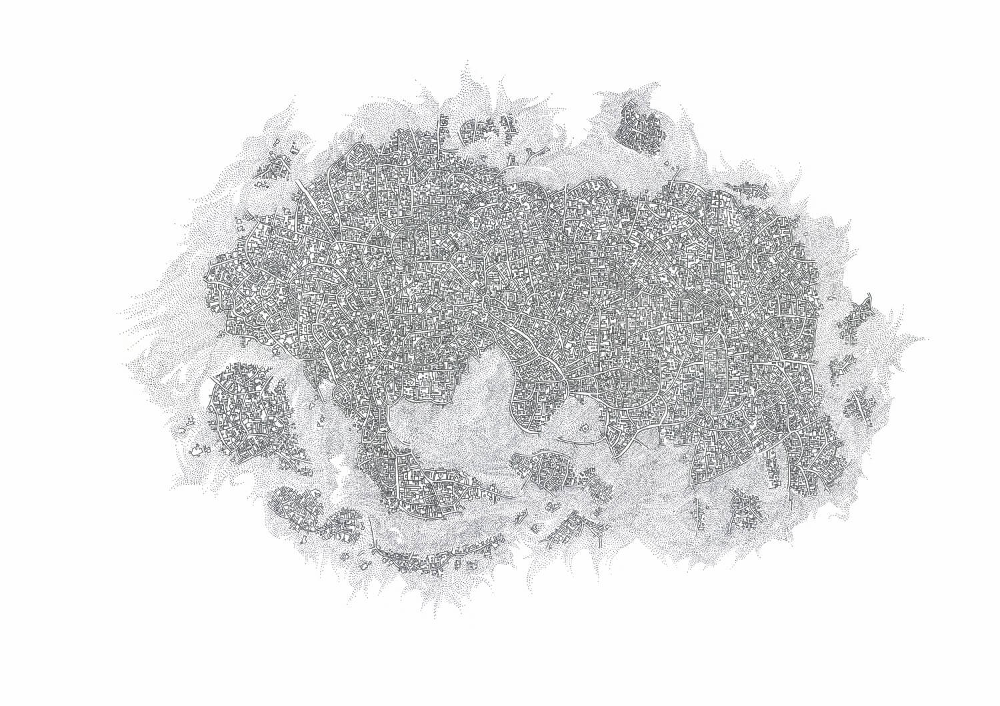
Promised land 2018 · 420 × 297 mm -
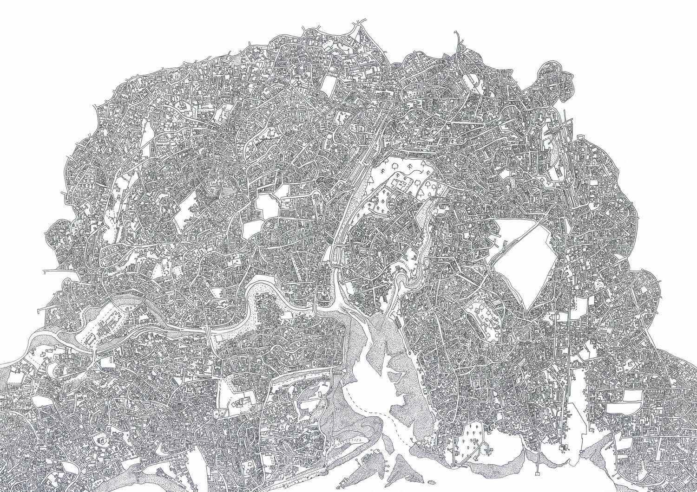
Hometurf II 2017 · 420 × 297 mm -
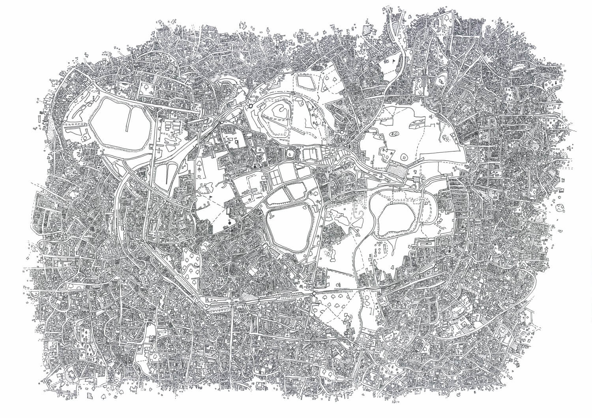
Hometurf 2017 · 420 × 297 mm -
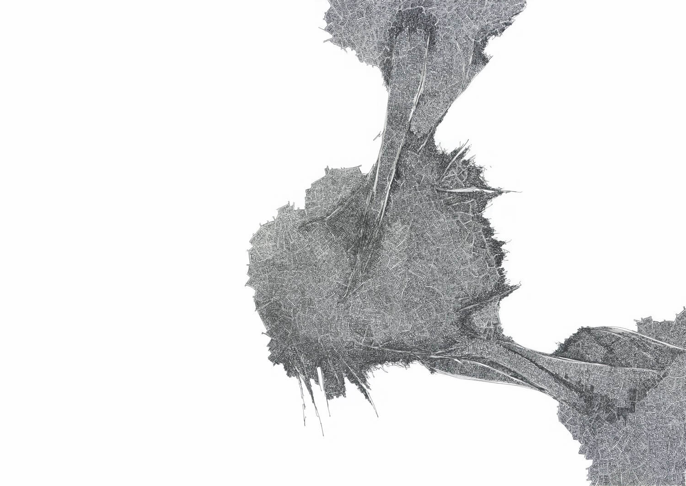
Echo 2019 · 420 × 297 mm -
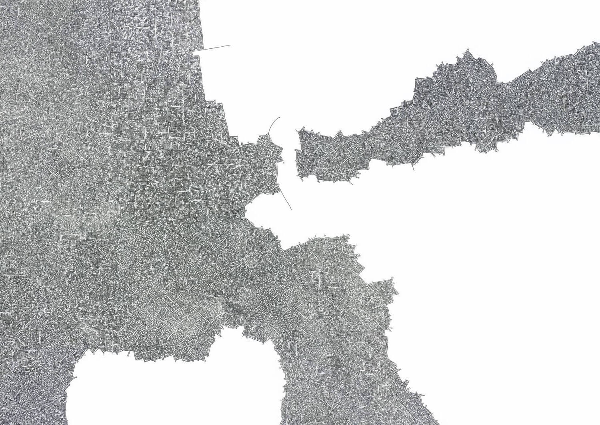
Tipping point 2019 · 420 × 297 mm -
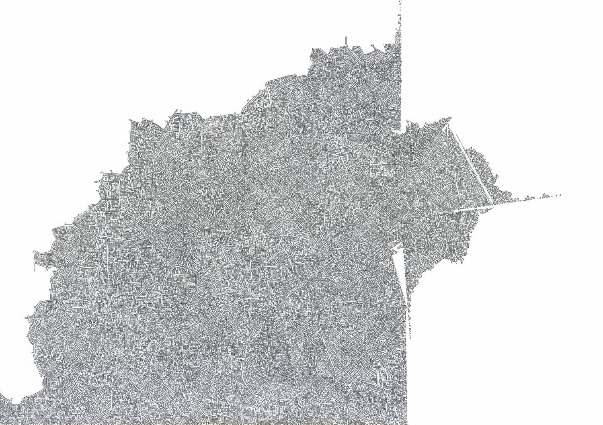
Process 2018 · 420 × 297 mm -
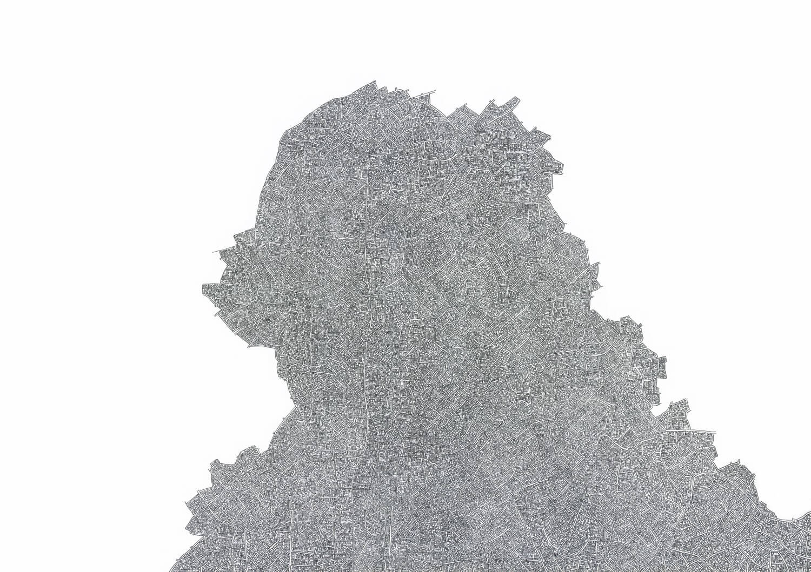
Protection 2018 · 420 × 297 mm -
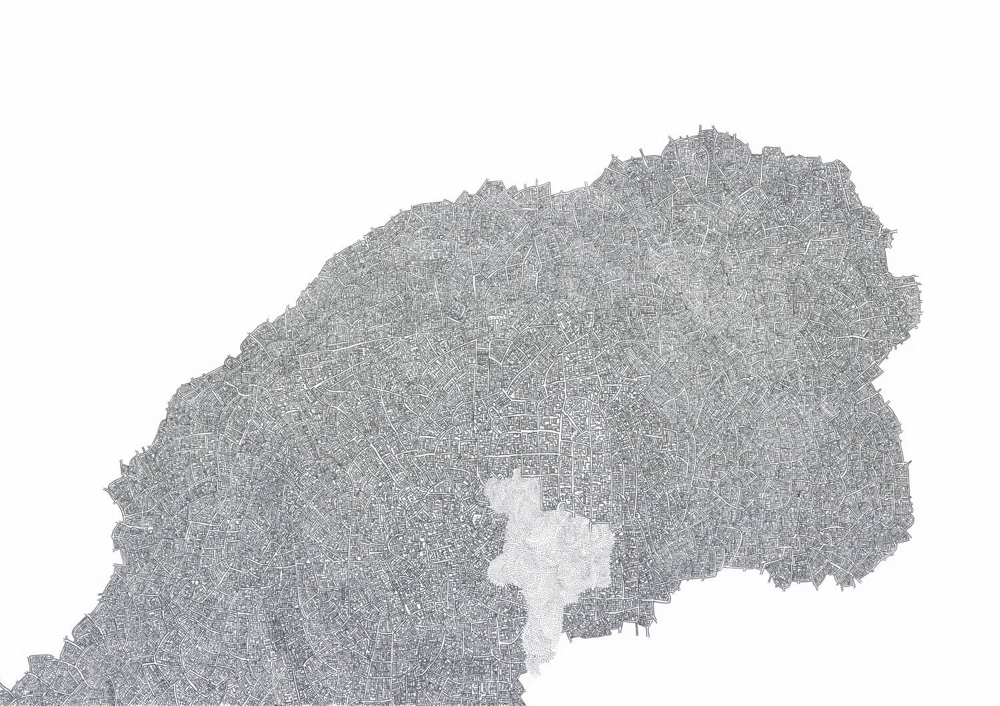
Cycle 2018 · 420 × 297 mm -
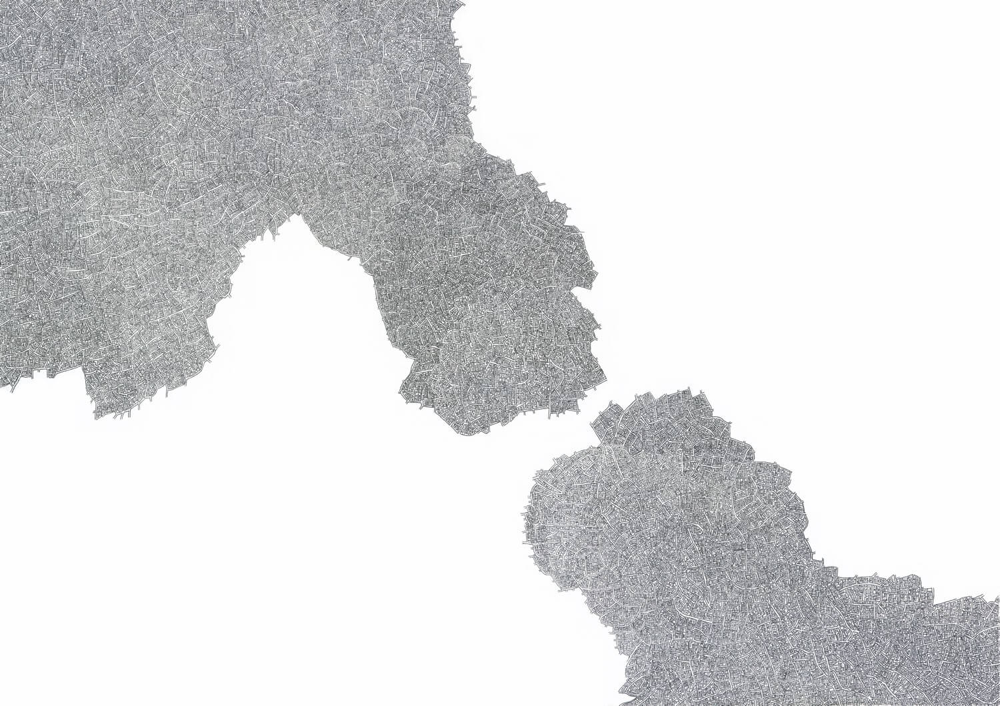
Circular systems 2019 · 420 × 297 mm
{kind=link}
{kind=link}
{kind=link}
{kind=link}
{kind=link}
{kind=link}
{kind=link}
{kind=link}
{kind=link}
{kind=link}
{kind=link}
{kind=link}
{kind=link}